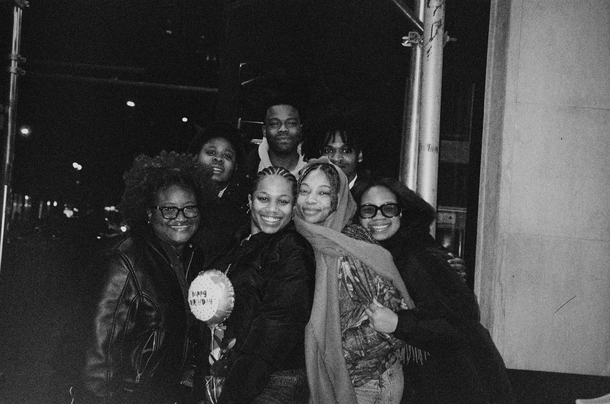

2016–2020
Education
Studied Computer Science at Spelman
I majored in Computer Science at Spelman, and had amazing opportunities to intern as a software engineer at Google on Maps, Hangouts, and Chrome.
I majored in Computer Science at Spelman, and had amazing opportunities to intern as a software engineer at Google on Maps, Hangouts, and Chrome.
During my internships, I learned that I wanted to make the transition from SWE to Product Design. Through the awesome classes I was able to take at NYU (including Virtual Reality Design, Audio Engineering, and more!) I was able to explore how to use my experience in engineering and my excitement about creating awesome digital experiences into a career in UX!

Graduation pictures by the Brooklyn bridge!
Leading the end-to-end design for digital tools that transition analyst workflows entirely out of Excel. Leading research initiatives, implementing AI-assisted design practices, and working through ambiguity to deliver experiences that create real business impact.
Outside of work, I try to make the most of all of the amazing opportunities to grow and get connected in my neighborhood! Here are some of the experiences I've had this year so far :)

Exploring New York restaurants with friends :)
Still have more questions about me? Here’s how you can find out more.